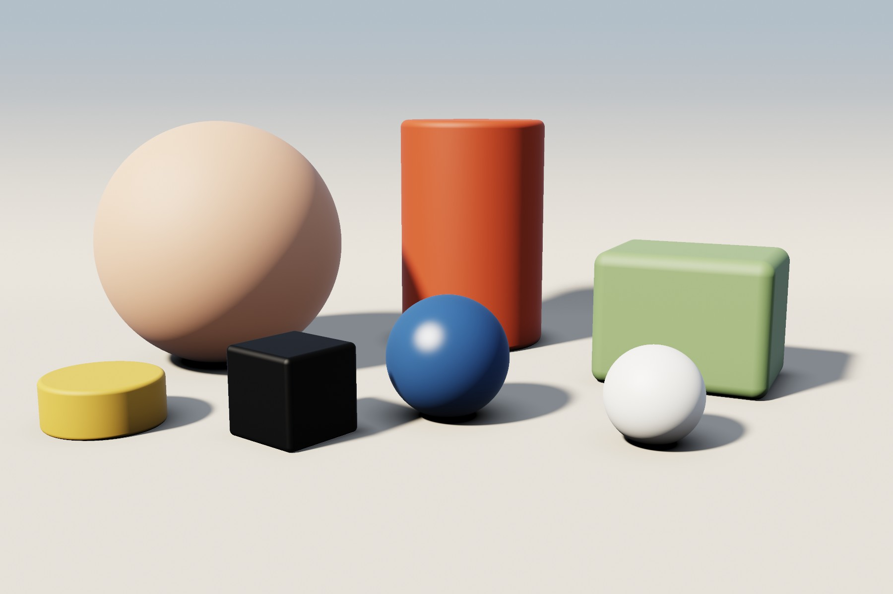

Havgus Sea fog: scattered light lifts every shadow Dagslys Daylight, true colour Højsol High summer sun: hard shadows, bleached colour Sankthans Low midsummer sun: amber light, soft shadows Blå time Blue skylight in the shadows, lamps in the highlights Nat Night: the eye loses colour and leans blue Natrium A sodium lamp: one wavelength, so one colour
